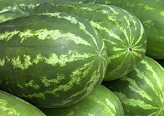

Dinnyék
A görögdinnye (Citrullus lanatus) a tökfélék vagy más néven kabakosok (Cucurbitaceae) családjába tartozó, Afrika déli részéről származó növényfaj, illetve annak termésének a neve. Sokan gyümölcsnek tartják, de termesztéstechnikailag zöldségnek számít.
David Livingstone, a híres Afrika-kutató, úgy írja le a görögdinnyét, hogy a Kalahári sivatagban rengeteg található belőle, úgy gondolják, hogy innen származik, és itt szabadon nő. A legkorábbi feljegyzett görögdinnyeszüret nagyjából 5000 évvel ezelőtt a dinasztikus Egyiptomban történt, hieroglifával is megörökítették. A növényt gyakran helyezték fáraók sírkamrájába élelemként a túlvilágra.
- alma
- körte
- barack
- húsleves
- rántotthús
- sült hús